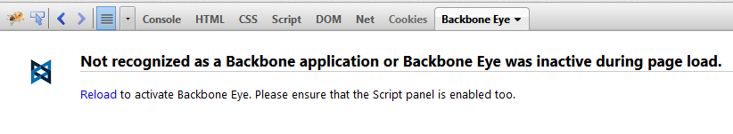
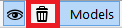
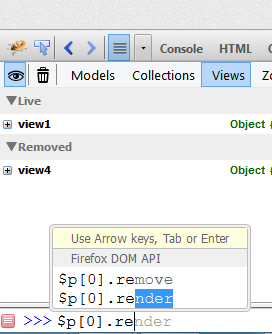
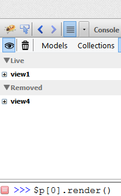
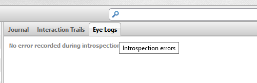

Application layer debugging
Understand Backbone application behavior without wading through JavaScript code. Backbone Eye is production-site friendly and can work off uglified and minified Javascript without needing any source maps.
Work with application constructs
Backbone Eye presents application specific models and views to introspect. Models show only application specific properties and shield away internal Backbone framework details. Search for models having certain attribute values, pin interesting models or use most-used models list to dig deeper.
Encourages "What-if" exploration
Change an application model attribute and see the impact of the change throughout the application in a graphical fashion. Or drill down to details about past state and operation arguments.
Detect Zombies
Backbone Eye attempts to detect models and views which are used by the application - even after they have been destroyed. Leverage the model interaction trails and journals to piece together what may have triggered this behavior.
Understand event-callback entropy
Visualize how Backbone Model (and Collection) updates may lead to redundant calls (multiple render calls to the same view as a result of an update). Develop insights into application flow to minimize (or remove) redundant callbacks and thereby improve application performance.
Debug templates
Backbone Eye makes underscore templates a debuggable unit. Put breakpoints in template code. At runtime, inspect model data being passed to the template, step through template code and observe template output being incrementally built.

Navigate to an URL to begin introspecting. To explain the various features of Backbone Eye, we will use the Backbone TODO application as our reference application.
Note Backbone Eye works with Firefox 23+ & Firebug v1.12+
Model categorization
 |
This section has three sub sections.
|
Enumeration of Model attributes
Backbone Eye only enumerates application specific model properties and hides internal Backbone properties. Internal properties can be viewed - if required - in the journal and interaction trails views.

Edit model attributes
Backbone Eye allows you to edit the value of a model attribute to see the ripple effect - that model change - has on the entire application. To edit any attribute value, double click on the attribute name of the specific model and change it to a new value.
Internals This maps to model.set({attribute_name:value})
Simulate "what-if" scenarios In the todo example, it is possible to change the model value from the UI as well (Primarily because it is editable, visible on the screen etc). But in the general case, it may be difficult to use application screens to edit model values. This feature will help you simulate what-if scenarios by allowing to update model attributes directly. To see the impact of the update, use the model interaction trails.

Search for models to investigate
Search can be either case sensitive or case insensitive. Valid search strings are
- attributename:value
- (partial) or full attribute name
| Search by partial attribute values |
 |
| Narrow further by specifying a attribute name |
 |
Nail down a model
Use the pin command to nail down models to investigate. Typically, search would precede the pin command.
| Pin a model |
 |
| Un Pin a model |
 |
Model Activity Indicators
Models having updates are momentarily highlighted with a colored band to draw user attention to model activity.
| Update a Model |
 |
| Destroy a Model |
 |

Note Also works on selected collection and view.
Note Read operations are deliberately not shown as they don't change application state (and will only contribute to investigative noise). In future versions, we may have an option to switch on this behavior.

The view shows the interactions which have happened at time t = 0, 1, 2 ... n. To view a interaction at t = m, click on the t = m header. The interaction trail is updated to show the flow at t=m. Expand the t=m section to see detailed info about the state of various participating entities, message name and parameters. By default, the last interaction is shown when you navigate to the interaction trails view.
Clear Interaction Trails and Journal data

This will cause both the journal and interaction data collected so far to be wiped out.


It is also possible to not record this data altogether. Toggle the eye button to stop or start recording this data
| Not recording | Recording | |
 |
 |
Tip Leverage this feature in real applications to improve debugger performance. Switch off recording and load the application URL. When you want to watch interesting (or weird perhaps!) application behavior, start recording.
Unlike interaction trails, the journal shows all activities which have happened on a specific model (or collection or view) at various time slots. It can be used to quickly check the evolution of model state over a period of time - as well as the various operation details which caused the state change.

Note Also works on selected collection and view.
Note Read operations are deliberately not shown as they don't change application state (and will only contribute to investigative noise). In future versions, we may have an option to switch on this behavior.
Tip Remember that this data can be cleared out as described here
View Categorization
A listing of view objects discovered by Backbone Eye.

|
This section has two sub sections.
|
Template inference
Backbone Eye infers templates which may have been used to render the views. In case a template-id was not specified in the application, a dummy template-id is assigned (starting with template_). This becomes the surrogate key of the template. These templates are visible in Firebug's Script Panel.

Debug the view generation process
View template can now be debugged - just like regular JavaScript code. The list of templates discovered by Backbone Eye are now present in the Script panel of Firebug.
The Javascript code to transform the the template (with data values) is shown in the source box. The source is commented with the template tags so it is easy to see what JavaScript maps to that template snippet. The Script panel has a new side-panel : Views. When a view template is being debugged, this panel becomes active and shows the data being passed to the template, the source template and the incremental template string being populated with data as the debugger steps through the template generation process.

Identify a View
It may be necessary to identify a Backbone View from an application screen. Conversely, it may be interesting to know what application screen a Backbone view corresponds to. Backbone Eye allows for both kinds of discovery.
Click on a view in Backbone Eye to see the corresponding screen highlighted in the application.

Using the Firebug inspector to select a screen in the application. The corresponding Backbone view in Backbone Eye will be highlighted and expanded.

Labs Feature Feedback will be appreciated!
Contains a listing of objects which are in use - even after they have been removed from the application - via Backbone remove or destroy calls. This section will simulate zombie creation in the reference application to demonstrate Backbone Eye Zombie detection.



Note Backbone Eye needs either the AMD loader or Backbone to be in global scope.
Note Backbone Eye works with Firefox 23+ & Firebug v1.12+